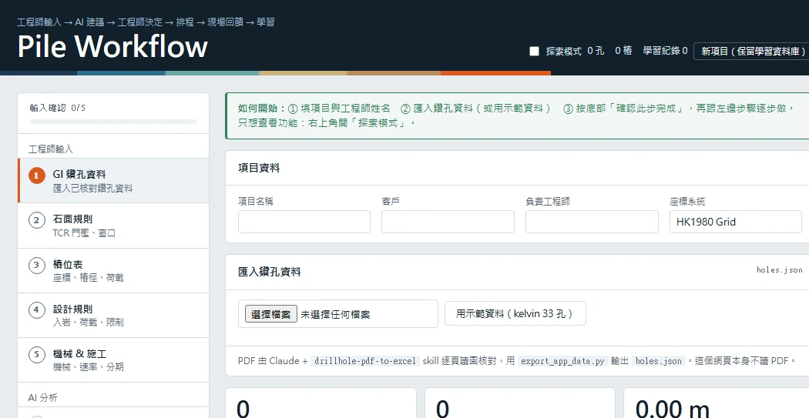
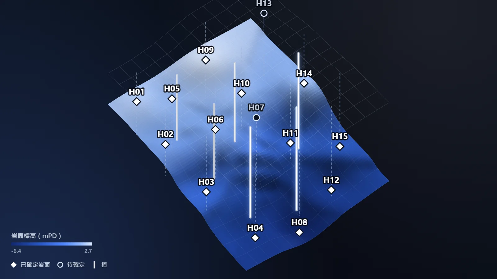
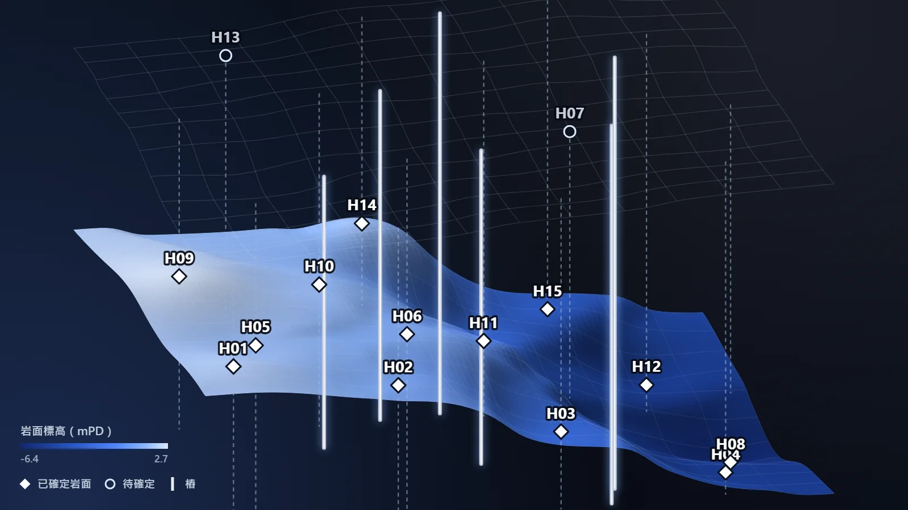

§ 重點
一眼看懂
- 要解決
鑽孔記錄格式各異：多欄、細字、跨頁，掃描或有文字層。
- 流程
- 整理輸入讀入鑽孔位置、地面和石面標高，以及待審查樁位。
- 建立三維分布用最近四個資料點做反距離加權內插。
- 保存審核決定AI 提供建議，工程師確認後才進入下一階段。
- 工具
- Python
- SQLite
- Claude API
- JavaScript
- OCR
§ 試用
親手試用
3D 地面、石面和樁位
15 個示例鑽孔 · 13 個已確定石面
拖動模型或用按鈕旋轉。原工作台用最近四孔做反距離加權內插，最近鑽孔距離超過 45 米的範圍不畫曲面。示範使用全新造的座標、標高及樁位。
§ 問題問題與限制
- 鑽孔記錄格式各異：多欄、細字、跨頁，掃描或有文字層。
- 石面標高決定樁長，錯了會直接影響設計。
- 設計判斷屬註冊工程師責任，工具只可以建議。
§ 做法做法細節
原工作台有平面、3D 和剖面三種視圖。
- 示範
- 公開示範沿用工作台地質步驟的 3D 繪圖及內插程式。
- 資料
- 座標、標高及樁位是新建示例。
- 分工
- 工程師負責設計決定。
10 步工作流程
- 流程
- 單檔 HTML 工作台分 10 步：GI 資料 → 石面規則 → 樁位表 → 設計規則 → 機械與施工 → AI 建議與工程師決定 → 地質視圖（等高線、3D、剖面）→ 排程（甘特圖、方案比較）→ 進度與現場回饋 → 本機學習資料庫。
- 關卡
- 每一步都要工程師確認，才進入下一步。
後端
- 組成
- Python 本機 REST 服務：ai.py 呼叫 Claude API 出建議，storage.py 以 SQLite 保存狀態和審核日誌，pdf_service.py 處理 PDF。
- 測試
- 33 項自動測試；AI 部分用模擬客戶端（mock）取代真實 API，不花 API 費用，結果可重複。
地質視圖
- 內插
- 最近 4 個鑽孔做反距離加權內插；距最近鑽孔超過 45 m 的位置留空，不外推。
- 示範
- 公開示範沿用相同的繪圖及內插程式，資料是新建示例。
實際用途
- 核對
- 核對真實樁表時，逐條重算切斷標高公式，找出不一致的樁，交工程師核實。
整理輸入
讀入鑽孔位置、地面和石面標高，以及待審查樁位。資料不足的孔保留位置，供工程師查核。
建立三維分布
- 內插
- 用最近四個資料點做反距離加權內插。
- 範圍
- 離最近測點超過 45 米的範圍不畫曲面。
- 線色
- 以不同線色分辨地面、石面及樁。
保存審核決定
AI 提供建議，工程師確認後才進入下一階段。原型以 SQLite 保存狀態和審核日誌。
架構：模型、程式與人手的分工
- 模型輸入鑽孔資料
由「複雜 PDF 判讀 Skill」讀出並核對 TCR、岩級和描述，再匯入位置、地面標高及待審查樁位。
- 程式石面計算（Excel 公式）
有效 TCR 只計 Grade I–III；1 m 窗口每 0.1 m 移動，由最深處向上找第一個 TCR 低於 85% 的窗口。
- 程式穩定性檢驗
門檻 83／85／87% × 窗口位移 ±0.03 m 重算；結果會變的標「需人手確認」。
- 程式三維分布
最近 4 個鑽孔做反距離加權內插；距最近鑽孔超過 45 m 的位置留空。
- 模型審查建議
後端以 Claude API 出建議。
- 人手工程師確認
每一步有確認關卡；決定與日誌存入 SQLite。
關鍵決定與取捨
採用石面用 Excel 公式計算
不採用Python 算好再填數值
工程師可在 Excel 逐格看到計算過程，自行修改及覆核。
採用AI 看圖讀值 + 疊圖覆核
不採用OCR 抽字
最後定案為「純看圖」流程，並寫成 Skill（見「複雜 PDF 判讀 Skill」）。
採用45 m 外留空
不採用全範圍畫連續曲面
內插只作初步估計，不在沒有鑽孔的地方外推。
// pile/index.html：最近 4 個鑽孔的反距離加權（IDW），同時回傳最近測點距離
function idw(e, n, pts, k = 4) {
const ds = pts.map(p => ({ d: Math.hypot(p.e - e, p.n - n), v: p.v, p }))
.sort((a, b) => a.d - b.d).slice(0, k);
if (!ds.length) return null;
if (ds[0].d < 0.01) return { v: ds[0].v, dmin: ds[0].d, spread: 0, near: ds[0].p };
let sw = 0, s = 0;
ds.forEach(x => { const w = 1 / (x.d * x.d); sw += w; s += w * x.v; });
const vs = ds.slice(0, 3).map(x => x.v);
return { v: s / sw, dmin: ds[0].d, spread: Math.max(...vs) - Math.min(...vs), near: ds[0].p };
}
// 繪圖時：距最近鑽孔超過 45 m 一律留空，不外推
const q = idw(p.e, p.n, rockPts);
if (!q || q.dmin > 45) continue;§ 結果實際成果
逐孔資料 → 3D 石面分布：在三維模型定位每個鑽孔、查看石面起伏，再對照樁位和工程師的審查決定。
評估
- 113 頁 ／ 33 孔
一份地質報告全部讀完並逐頁核對。
- 64 ／ 64
石面計算回歸測試，標準答案逐格全中。
- 33 ／ 33
後端 33 項測試全部通過（AI 部分以模擬客戶端測試）。
- 公式核對
用真實樁表驗證公式時，找出公式不一致之處，交工程師核實。
內插只作初步估計；設計判斷由註冊工程師負責。
同一組資料的另外兩個角度


三張圖均由頁面下方同一個互動元件在無頭瀏覽器渲染，鑽孔、石面及樁位為新建示例資料。
§ 限制失敗情況與防護
| 可能出錯 | 防護 |
|---|---|
| TCR 貼近門檻，結果不穩 | 穩定性檢驗，標「需人手確認」。 |
| 鑽孔沒有石面 | 可判定「沒有石面」並寫明原因。 |
| 資料不足的孔 | 保留位置，交工程師查核。 |
| 遠離鑽孔的內插 | 45 m 外留空。 |
| AI 建議出錯 | 工程師確認後才進入下一步，並有審核日誌。 |